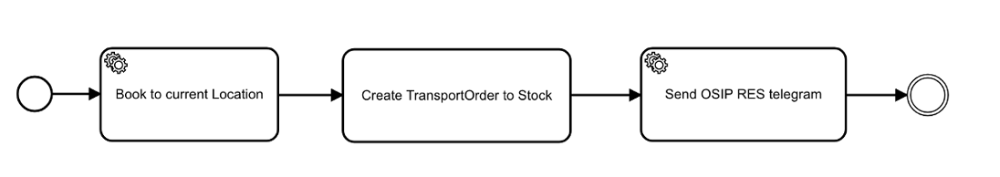

Intention
The TMS Routing service is used in automatic warehouses to route TransportUnits on conveyors through the warehouse. It is responsible to
handle incoming messages and selects the appropriate workflow process that finally executes the handling. The workflow is a BPMN 2.0
compliant workflow, with extensions of the used workflow engine.
Resources
Documentation at Wiki


Details
A typical and simple workflow to handle incoming OSIP REQ_ messages could look like this:

(1) Whenever a REQ_ message arrives, the TransportUnit with the given Barcode is booked onto the Location provided in the message.
(2) For the current TransportUnit a TransportOrder is created with the target LocationGroup equals to FGSTOCK.
(3) In the final step the system triggers a service to send an OSIP RES_ message to the underlying subsystem (i.e. PLC or Raspberry Pi) with
the next Location coordinate to move the TransportUnit to.
The shown BPMN snippet looks in XML like this:
<serviceTask id="Task1" name="Book to current Location" activiti:expression="#{transportUnitApi.moveTU(in.msg.barcode, in.msg.actualLocationId)}" />
<serviceTask id="Task2" name="Create TransportOrder to Stock" activiti:expression="#{transportOrderApi.createTO("FGSTOCK")}"></serviceTask>
<serviceTask id="Task3" name="Send OSIP RES telegram" activiti:expression="#{responder.sendTo(in.msg.flexField1)}"></serviceTask>
Notice that the flow and the expressions are modeled in Flowable Model Explorer and there are extensions to the BPMN standard. Other supported workflow engines like Camunda or Activiti have their own XML namespace extensions, but the XML element names are almost the same.
Benefits
Why did we choose BPMN for the transport management system? From the experience we have from projects and systems in the past we know that the physical layout of a system and the material flow is something that always needs to be adopted to the particular customer project. Changing the material flow must happen rapidly without any compilation nor deployment interruption.
The second huge benefit of using BPMN for the material flow handling is the advantage of having the same notation for business people as well as software engineers, so both can define and communicate on the same process models.
Usually after doing a couple of projects an engineer or the project team has a library of well known business functions that they can use to build new flows for new customer projects. Not only the microservice functions can be reused across projects but also BPMN flows. We misuse the concept of BPMN for a good purpose :-)
Features
The current implementation allows to refer standard Spring managed beans within BPMN workflows. Remotely http accessible microservices can
be accessed with support of Feign. Therefor the TMS Routing service needs to have the Feign client interface definitions on the classpath
at startup, by simple extending the classpath with the JAR file when the process is started.
Static Routing
Requests from a PLC for a next target can be answered statically by using a routing table. For this reason a Route may have RouteDetails
entries in a defined order (ordered by the pos attribute). The actual location from the telegram is used to determine the next target. In
the selected workflow a call to #{routing.sendToNextLocation()} chooses the next routing location.
Hard Coded Routing
The workflow that calls the microservice to send the request telegram could pass the next Location hard-coded within the workflow. This is
more or less the simplest solution but has the drawback that the workflow may not be reused, because the target is hard-coded.
Dynamic Routing
Dynamic routing is another strategy in contrast to static or hard-coded routing. The workflow can be customized with so-called
Flex Attributes. This means a workflow can be called with parameters and these parameters come from a defined Action. The Action might
be specific to the project. BPMN workflows should be reusable across projects - Actions may not.
Configuration
The following Spring profiles are currently supported:
ASYNCHRONOUS - Run with AMQP communication
CAMUNDA - Enable Camunda as workflow engine
DISTRIBUTED - Enables the service to run in a microservice system
FLOWABLE - Use Flowable as workflow engine (default)
Development
Build
To build an executable JAR file that can run either in a standalone or in a distributed environment call:
$ mvn package
Run
After the deliverable has been built it can be started with:
$ java -jar target/openwms-tms-routing-exec.jar
In case the service has been started in a distributed environment along a central configuration server and service registry the
DISTRIBUTED profile needs to be activated. For processing over AMQP also the ASYNCHRONOUS profile must be active:
$ java -jar target/openwms-tms-routing-exec.jar --spring.profiles.active=DISTRIBUTED,ASYNCHRONOUS
The service is also available as Docker image on Docker Hub and can be started with:
$ docker run -it openwms/org.openwms.tms.routing:latest
Appendix
Further reading
| ID | Description |
|---|---|
| L001 | Secured Eureka First Microservices |
| L002 | Development Process |